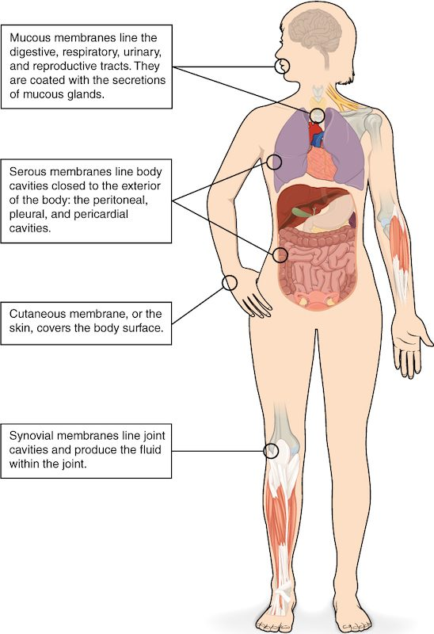

Tissue repair, inflammation and regeneration all start the moment you are cut. This page first shows the sheets of tissue that line and cover your body, the tissue membranes, because those are what an injury usually breaks first. Then it follows a cut from the first minute to the finished repair: the inflammation that starts it, the regeneration that restores working cells, and the scar tissue that fills in when cells cannot regrow.
Start with a cut
You slice your palm on a kitchen knife. The cut bleeds, then stops. Within an hour the skin around it is red, warm, swollen and sore. Over the next week the gap fills in and new skin grows across it. A month later a thin pale line is all that is left.
Every step of that story has a mechanism. To follow it, you first need to know what you cut through.
Tissue membranes: sheets that cover and line
A tissue membrane is a thin sheet of tissue that covers a body surface or lines a body cavity or hollow organ. Do not confuse it with a plasma membrane, which is the lipid bilayer around one cell. A tissue membrane is made of many cells.
Most tissue membranes have two layers you already know: an epithelium on the surface, attached to a layer of connective tissue underneath. That kind is an epithelial membrane. One kind has no epithelium at all and is made only of connective tissue: a connective tissue membrane.
There are four named membranes. Three are epithelial membranes: mucous, serous and cutaneous. One is a connective tissue membrane: synovial. Figure 1 shows where each is found.

Mucous membranes
Run your tongue over the inside of your cheek. That moist lining is a mucous membrane, also called a mucosa (plural mucosae). It lines every tube or cavity that opens to the outside of your body: the digestive tract from mouth to anus, the airways, the urinary tract and the reproductive tract.
A mucosa has two layers:
- Epithelium on the surface. Its type depends on the place: stratified squamous where the surface is rubbed, as in your mouth; simple columnar in your gut; pseudostratified ciliated columnar in your airways; transitional in your urinary bladder.
- The lamina propria (lamina = thin layer, propria = its own) beneath it: a layer of loose areolar connective tissue carrying capillaries, nerves and many white blood cells.
The surface stays moist because goblet cells and small mucous glands in the lining release mucus onto it. Not every mucosa makes much mucus, though. The lining of your urinary tract is kept wet mainly by urine.
Serous membranes
You met the serous membranes with the body cavities: the pleura around the lungs, the pericardium around the heart and the peritoneum in the abdomen. Each is a simple squamous epithelium, called mesothelium, on a thin layer of loose connective tissue. Unlike a mucosa, a serous membrane lines a closed cavity with no opening to the outside. Its cells release a thin serous fluid into the narrow space between the parietal and visceral layers. That fluid lets the layers slide over each other with little friction as your lungs and heart move.
The cutaneous membrane
The cutaneous membrane (cutane/o = skin) is your skin. Its surface layer, the epidermis, is keratinized stratified squamous epithelium. It sits on the dermis, a thick layer of dense irregular connective tissue. It is the only dry membrane: its outer cells are dead and filled with keratin, and they do not release mucus or serous fluid. The skin chapter, which comes next, studies it layer by layer.
Synovial membranes
Inside your knee, the ends of the bones glide against each other within a sealed space. A synovial membrane (syn- = together, ov/o = egg, from the egg-white look of its fluid) lines that space. It has no epithelium. It is a connective tissue membrane made of areolar connective tissue, with a lining layer of cells facing the space. Some of those cells resemble fibroblasts and release a thick, slippery fluid rich in large sugar-based molecules. Others resemble macrophages and clear debris by phagocytosis. The fluid reduces friction between the cartilage-covered bone ends. You will study these joints in the joints chapter.
| Mucous | Serous | Cutaneous | Synovial | |
|---|---|---|---|---|
| Kind | Epithelial membrane | Epithelial membrane | Epithelial membrane | Connective tissue membrane |
| Surface layer | Epithelium that varies by site | Simple squamous (mesothelium) | Keratinized stratified squamous | No epithelium; a layer of connective tissue cells |
| Deeper layer | Lamina propria (areolar connective tissue) | Thin areolar connective tissue | Dermis (dense irregular connective tissue) | Areolar connective tissue |
| Where | Tracts open to the outside | Closed body cavities | Body surface | Cavities of movable joints |
| Surface fluid | Mucus (in most places) | Serous fluid | None: a dry surface | Thick, slippery joint fluid |
| Example | Lining of the mouth | Pleura | Skin of the hand | Lining of the knee |
Inflammation: the first response to injury
Go back to the cut. The knife broke through the cutaneous membrane into the connective tissue underneath. Within minutes the area turns red, warm, swollen and painful. Those four signs are inflammation (inflamm/o = to set on fire, -ation = process), also called the inflammatory response. Here is the short version. The immune system chapter returns to it in full.
The response starts with chemical signals. Damaged cells release them. So do mast cells: connective tissue cells packed with granules of histamine and other chemical messengers. Injury makes mast cells release those granules by exocytosis. These are paracrine signals: they act on the nearby blood vessels and cells. Each sign of inflammation traces back to them:
- Redness and heat. Histamine and prostaglandins cause vasodilation of the small arteries that feed the area. More warm blood flows in from your body's core, so the skin looks red and feels warm.
- Swelling. Histamine also makes the walls of capillaries and the smallest veins leakier: gaps open between their endothelial cells. Water and proteins from plasma leak into the interstitial fluid, and the tissue swells.
- Pain. The chemical messengers, and the pressure of the swollen tissue, stimulate pain-sensing nerve endings.
White blood cells also stick to the inner walls of the smallest veins nearby and squeeze out between the endothelial cells into the injured tissue. Macrophages engulf dead cells, debris and any microbes by phagocytosis. Clotting proteins that leak from the plasma form a mesh that walls off the area. Clearing the debris is what lets repair begin.
Inflammation after a small cut settles within days. When it continues for weeks or months, it damages the tissue it started in. That longer form is covered in the immune system chapter.
Tissue repair: two outcomes
Tissue repair is the process that replaces damaged tissue. It always ends in one of two outcomes, or a mix of both:
- Regeneration (re- = again, gener/o = to produce): surviving cells of the same type divide and replace the lost cells. The tissue works as it did before.
- Fibrosis (fibr/o = fiber, -osis = condition): fibroblasts fill the gap with dense collagen fibers. The result is scar tissue, which holds the tissue together but does not do the lost cells' job.
To see why, split any organ into two parts. The parenchyma (par- = beside, en- = in, -chyma = something poured) is the organ's working cells: liver cells, gland cells, heart muscle cells. The connective tissue framework holds them in place and carries their blood vessels. Regeneration replaces parenchyma with parenchyma. Fibrosis replaces it with connective tissue.
Figure 2 follows the steps.
What decides regeneration or scarring
Two things decide which outcome you get.
First, whether the lost cells can divide. Tissues differ a great deal:
- Regenerate well: epithelia such as the epidermis and the gut lining, whose stem cells divide throughout life. Your liver can also regrow a large part of its mass after an injury, because its mature cells return to the cell cycle and divide.
- Regenerate partly: smooth muscle and skeletal muscle. Skeletal muscle has a small pool of stem cells beside its fibers that can replace some damaged fibers, but large losses heal with scar tissue.
- Regenerate very little: cardiac muscle, and the neurons of the brain and spinal cord. When part of the heart muscle dies after its blood supply is blocked, the dead muscle is replaced by scar tissue. The scar cannot contract, so that part of the heart wall no longer pumps.
Second, how much framework survives. Even a tissue that regenerates well needs its connective tissue framework intact to rebuild the right shape. A shallow scrape, where the basement membrane and framework survive, regrows perfect epidermis. A deep, gaping cut that destroys the framework fills with collagen and leaves a scar.
Necrosis: cell death from injury
Some cells at the edge of your cut died. How they died matters.
Necrosis (necr/o = death, -osis = condition) is cell death caused by injury: loss of blood supply, crushing, burns, extreme cold or poisons. Often the injured cell runs out of ATP. Its sodium–potassium pumps stop, sodium builds up inside, and water follows by osmosis. The cell and its organelles swell, the plasma membrane ruptures, and the cell's contents spill into the interstitial fluid. Those spilled contents act as danger signals and set off inflammation, which can harm nearby healthy cells too.
Compare apoptosis, the programmed cell death you learned with the cell cycle. An apoptotic cell shrinks and breaks into small membrane-wrapped pieces. Macrophages engulf the pieces before anything spills, so there is no inflammation. Your body removes billions of cells a day this way without you noticing.
| Necrosis | Apoptosis | |
|---|---|---|
| Trigger | Injury: lost blood supply, crushing, burns, poisons | Signals inside or outside the cell; a normal, controlled process |
| Cell size | Swells | Shrinks |
| Plasma membrane | Ruptures; contents spill out | Stays sealed around small pieces |
| How many cells | Often many neighboring cells at once | Usually single cells |
| Inflammation | Yes | No |
| Example | Heart muscle cells after their blood supply is blocked | Old gut lining cells being replaced |
The cut, start to finish
Now the story makes sense step by step. The knife broke blood vessels, and a blood clot stopped the bleeding. Some cells died by necrosis, and their contents plus histamine from mast cells triggered inflammation: vasodilation made the area red and warm, leaky capillaries made it swell, and the chemicals made it hurt. Macrophages cleared the debris. Stem cells in the epidermis divided and regrew the surface, which is regeneration. Deeper down, where the cut destroyed the framework, fibroblasts filled the gap with collagen. That collagen is the pale line: a small patch of scar tissue.
The skin chapter follows skin injuries and their repair in more detail, and the immune system chapter covers inflammation fully.